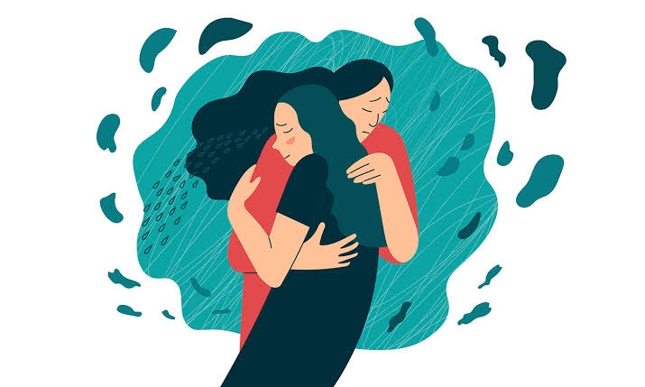
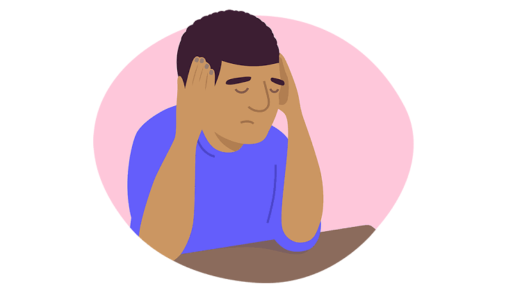

Living with Loss: The Complex Reality of Grief and Recovery
Ring… Ring… Ring… You pick up the phone and receive what most would consider the most heartbreaking news: a loved one has passed away. In the moment, you may be overcome with denial and shock, refusing to believe that this person who is a detrimental part of your life will no longer be there for the good and the bad moments of life. From this moment on, you begin your journey with grief.
What is Grief?
Grief is your response to a profound loss. When you begin your journey of grief, you are encompassed by emotional turmoil that begins to disrupt your daily life and can begin to target your health. Therefore, grief is considered a strong emotion that has great power throughout our life; some can drown in it and neglect their own health, preferring to wither away slowly, ignoring the pleasures that come with life. However, while this experience is grave and harsh, there are methods to overcome it and stages that you must overcome to eventually, not completely forget the pain, but allow yourself a chance to continue your life to the best of your abilities.

What are the stages of Grief?
Denial:
Once you have experienced the loss, you refuse to acknowledge or believe that it has truly happened. You may continue about with your life as though nothing of importance has occurred. In case of death, you may make statements, such as, "Why are you crying? … is coming back; he/she isn't actually gone." Because of the magnitude of the shock, the person vehemently opposes understanding or comprehending what actually occurred.
Anger:
Now, you have not comprehended the loss, however, you have admitted that something may have happened. As a result, now, anger has become your primary emotion. You feel this need to direct the blame at someone to explain why this has happened. You may ask yourself, "Why is this happening to me? What did I do to deserve this?" Because you still have not truly accepted the event, you try to understand the reason behind the loss, as though that will bring back what is now gone.
Bargaining:
As a means to make things as they once were, you begin to bargain. For example, "If I do this…will this return?" Or "If I'd done this then they would not have left?" Here, you may begin to be encompassed by guilt or regret, wishing you had said or done something before it was too late, maybe this would have prevented the loss from occurring.
Depression:
After trying to bargain with the situation, you are overcome with extreme sadness and feel as though there is no light, happiness, or escape from this overwhelming loss. Life has suddenly taken an abrupt stop and feels as though it will not continue. Complex emotions are your constant company causing you to cut off yourself from others and begin to neglect your needs.
Acceptance:
The last and most difficult stage - acceptance. In this stage, you have finally accepted the loss, regardless, if the pain still continues with you. Finally, you understand that there is nothing that you could have done to bring back what has already left; here, you begin to once again immerse yourself in life and all the opportunities it has to offer, but not without the reminder of what has gone.
While these five stages are considered the standard process of grief, numerous types of grief are caused by different experiences and can exhibit a variety of different emotions.
What are the types of Grief?
Anticipatory Grief:
In this instance, you are anticipating the loss; consequently, you begin the grieving process and undergo the emotional suffering, as you await the loss that will occur. This occurs in cases where a loved one suffers from a terminal illness; therefore, they undergo anticipatory grief, anticipating the departure of their loved one.
Abbreviated Grief:
For some, the process of grief is completed in a short amount of time. They reach the stage of acceptance relatively quickly; this type may follow the anticipatory grief, since the individual has processed most of their emotions.
Delayed Grief:
The emotions that accompany grief may be felt in the following days, months, or years. In some cases, there are numerous responsibilities or matters that must be sorted through; therefore, the individual does not have time to truly allow the shock to wear off and begin the process, delaying the stages.
Inhibited Grief:
Some prefer to repress their emotions when dealing with grief. Consequently, they can never truly accept the loss without experiencing and embracing the emotions that follow. However, some may not truly comprehend that they are repressing their emotions, which results in these emotions impacting their health through sleep difficulties, stomach aches, and panic attacks.
Cumulative Grief:
Life is full of ups and downs, and sometimes the downs can accumulate. In cases of cumulative grief, you are grieving numerous losses at once; for example, the loss of a partner through divorce, the loss of a house, and a miscarriage. Because these heartbreaking events are occurring one after the other, the individual experiences grief in a large magnitude as they process these losses.
Collective Grief:
In cases of natural disasters, wars, pandemics, and school shootings, we collectively grieve the loss of others, as though it was our own. We, as a group, understand the significance of this loss.
.jpg)
However, with this life altering experience, we may suffer from symptoms, as a result of the complex and strong emotions that encompass our lives.
What are the symptoms of Grief?
Emotional Symptoms:
- Sadness mixed with relief
- Longing for a partner after a divorce but elated at a new chance at love
- Guilt for feeling grateful or relieved that a loved one with a terminal illness has passed
- Constant competition between emotions of anger, sadness, regret, and apathy over the death of a person with whom your relationship was strained.
Physical Symptoms:
- Fatigue
- Headaches
- Insomnia
- Nausea
- Stomach Issues
- Pain in your muscles or joints
- Increased or reduced appetite
Behavioural Changes:
- Confusion
- Indecisiveness and trouble thinking
- Feeling as though you have no purpose or will to continue
- Concentration is now all on your loss, making it difficult to accomplish any simple task
- By drowning in your loss, you begin to forget vital information and neglecting your responsibilities.
While everyone experiences grief in different forms, there are a lot of sayings and beliefs that surround grief that are not true or helpful.
What are some misconceptions about Grief?
Misconception: Time will heal all wounds
While it is true that you will not accept your loss in a day; however, time alone will not heal any wounds.
Misconception: If the grief isn't visibly clear on your face, then you aren't feeling sorry about the loss
This is completely untrue; people grieve in different ways. There are different ways to convey emotions, and tears do not show the importance of the person to you.
Misconception: Grieving should only take a year
Once again, grieving does not have a time limit as every person undergoes this process differently
Misconception: Ignoring the pain will help the grief to diminish
Not only is this solution temporary, it will also cause you heartbreak in the future. Since you are not processing your pain, you will deal with inhibited grief; in this case, when you decide to deal with your emotions, its magnitude will be too great.
Misconception: Moving on with your life means that you have forgotten about what you have lost
Moving on doesn't mean forgetting, but rather living with the pain and choosing to experience life once again. You will never truly get over losing a loved one; however, they have passed, and you have not. Therefore, you must continue on with your life with the reminder of their love, character, and care for you and live as they would have wanted you to.
Misconception: Once you have reached acceptance over your loss, these feelings will never come up again.
.jpg )
Grief tends to lessen in terms of intensity; however, it can sneak up on you at any given moment. Maybe your child does something similar to what your relative who has passed away used to do; maybe visiting a place that they liked to go to. At any given moment, you can feel as though you are experiencing the loss as though it happened yesterday.
.jpg )
This experience is not an easy one, regardless of its hardship you and those around you will help you reach acceptance.
What can others do to help you on your journey of Grieving?
- Be there for and try to make yourself available in the way they would like, such as taking over some responsibilities, talking about the deceased, distraction, or just a simple hug in silence
- Offering help makes those who are grieving feel as though they are not completely on their own. It makes them feel some sort of security in the shocking and hurtful endeavour
- Understand that the individual may experience several mood swings varying from anger, to sadness, to relief. Therefore, be prepared to just be there for them throughout these mood swings
- Sometimes people need to hear that you are always there to listen; for some, they grieve by retelling their favourite memories with these people.
However, while having those dearest to you around during these times, you must learn to begin to cope with the grief until you can stand on your own two feet
How do you cope with Grief?
- Practicing taking care of yourself through self-care in the form of sleeping a good night's sleep, napping, eating nutritious meals, meditating, and prioritizing yourself.
- By having a routine, it will create a sense of normalcy that will allow you to regain some control over your life and create a space to regulate your emotions.
- If you are feeling certain emotions, do not ignore them. Allow yourself to sit with these emotions.
- Find those you consider your safe haven and surround yourself with them. Remind yourself that these people are there for you at all times. You are entitled to your own me-time, but those who care and love you will be there every step of the way.
- If you feel as though you are stuck in a loop, you can always seek out professional help and take to a specialist.
- Avoid making life-altering decisions, as you are not have any clarity in your mind to ponder on the consequences. During this time, your concentration is centred around the loss

Additional Resources
There is no such thing as moving on